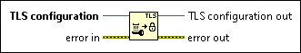

Make TLS Configuration Immutable Function
Owning Palette: Transport Layer Security Functions
Requires: Base Development System
Makes a Transport Layer Security (TLS) configuration immutable. You must make a TLS configuration immutable before applying the TLS configuration to a TCP connection using the Start TLS function or Accept TLS function.

 Add to the block diagram Add to the block diagram |
 Find on the palette Find on the palette |